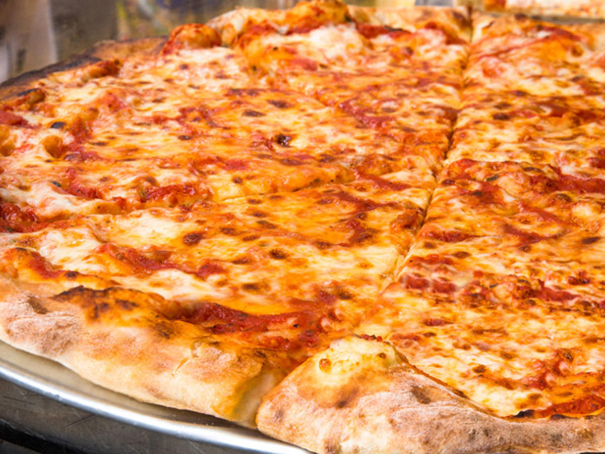

This is a picture of lasagne
The recipe is fairly easy.
I'll show you this in the list below.
Ingredients
- The meat sauce
- The white sauce – creamy and thick, but no cream required!
- Assembling and baking.
Steps for the Meatsauce
- Onion, garlic, carrot and celery – for the flavour base, a soffrito
- Beef
- Canned tomato and tomato paste
- Red wine – for extra flavour!
- Seasonings – beef bouillon cubes (stock cubes), bay leaves, thyme, oregano, Worcestershire sauce
Steps for the Whitesauce
Last step: Layering up!
- Smear a bit of meat sauce on the base first – stops the lasagna sheets from sliding around;
- Layer 1 – top with meat sauce, bit of white sauce
- Layer 2 – lay out more lasagna sheets, then top with more meat sauce and more white sauce
- Layer 3 – repeat again, lasagna sheets, meat sauce then white sauce
- Topping – cover with lasagna sheets, pour over remaining white sauce then sprinkle with cheese.